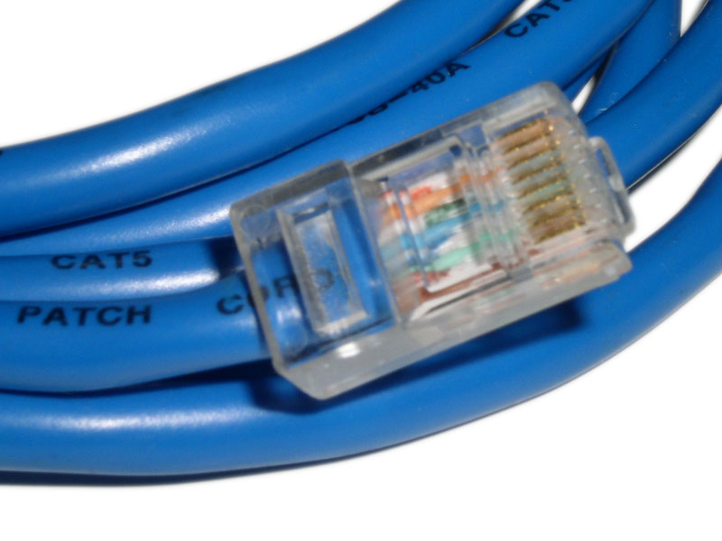
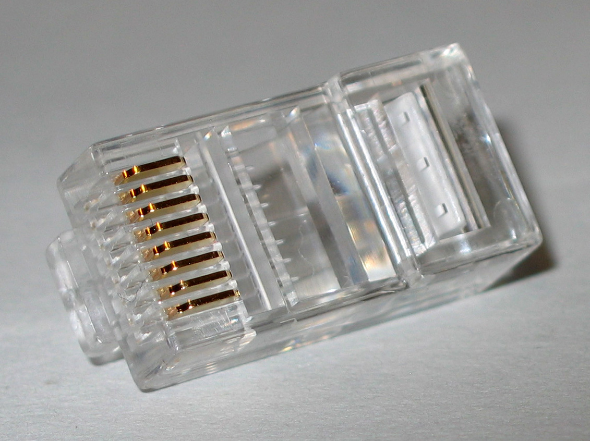

Lesson 1 of 8
Across one link
- Name the parts a message passes through
- Separate bits from the physical signal
Send a message across one Ethernet cable
Type a short message, then step through its journey from an application on Computer A to an application on Computer B. Keep it short so the bytes stay readable.
Lesson 2 of 8
Speed and delay
- Use data rate, throughput, delay and RTT correctly
- Explain why a transfer rarely reaches the advertised rate
Transfer-time explorer
A link’s advertised data rate is a capacity, not a promise. Move the sliders and watch how file size, link rate, congestion and distance change the result.
Lesson 3 of 8
Why use a switch?
- Compare direct links with a switched LAN
- Count cables and NICs for each design
Grow the network and watch the cabling
Two computers connect with one cable. Connecting every computer directly to every other computer stops scaling very quickly. Add computers and compare.
Direct links need n(n − 1) ÷ 2 cables. A switched LAN needs one cable for each computer. That difference is why the switch is the standard building block of the local area network.
Lesson 4 of 8
Follow the frame
- Read source and destination MAC addresses
- Explain learning, forwarding and flooding
Teach the switch where everyone lives
Five hosts share one Ethernet switch. The switching table starts empty. Choose a source and destination, send a frame, and watch what the switch does. Challenge: fill the whole table using as few frames as you can.
Switching table
| MAC address | Port |
|---|---|
| Empty. The switch has learnt nothing yet. | |
What just happened
Lesson 5 of 8
Protocols and layers
- Describe a protocol as agreed rules
- Build and unwrap an encapsulated message
Why rules matter
A protocol is a set of agreed rules covering message format, meaning, order and the actions to take. Toggle between a message with agreed rules and one without.
Wrap it up: encapsulation builder
Layered networking places one protocol’s message inside another. Add the headers in the correct order, then deliver the frame and unwrap it exactly as Computer B would.
Lesson 6 of 8
Ethernet and MAC addresses
- Wire an RJ45 connector to T568B
- Split a 48-bit MAC address into its two halves
Wire the connector: T568B
A LAN cable holds four twisted pairs, eight wires in total. Hold the connector with the clip away from you; pin 1 is on the left. Select a wire, then select the pin it belongs in. Use the same standard at both ends for a straight-through cable.


- Keep the wire colours in order all the way to the front of the plug.
- The crimp tool pushes the gold contacts down through the insulation to touch each copper conductor.
- For a straight-through cable, use the same wiring standard at both ends. This exercise uses T568B.
Decode a MAC address
A MAC address is 48 bits, written as six pairs of hexadecimal digits. Each pair is one byte. Type any MAC address, or use the one from the lecture’s PowerShell output.
Read the PowerShell output
Lesson 7 of 8
Build and troubleshoot
- Follow design, build, test and document
- Diagnose cable, addressing and firewall faults
The virtual bench: connect two computers directly
Configure a direct Ethernet connection, then test it with a simulated Test-NetConnection (ping). For this Week 2 exercise, both addresses use a simplified /24 rule: the first three decimal sections must match and the final section must differ. Formal subnetting comes later in the unit.
Computer A (Windows)
MAC 01-23-45-67-89-AB
Computer B
MAC CC-DD-EE-FF-00-11
Fix-the-fault challenges
Each challenge loads a broken bench. Find the fault, fix it, and make the ping succeed.
Lesson 8 of 8
Check understanding
- Review the central Week 2 ideas without notes
Eight questions, instant feedback
Answer without returning to the earlier lessons. Feedback appears immediately; treat a wrong answer as a pointer to the lesson worth revisiting.